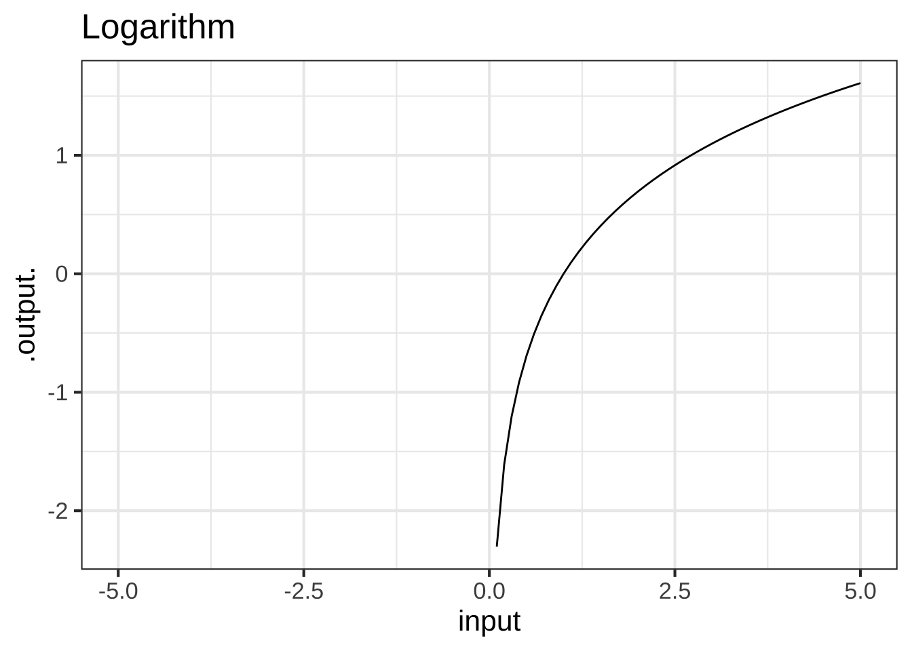
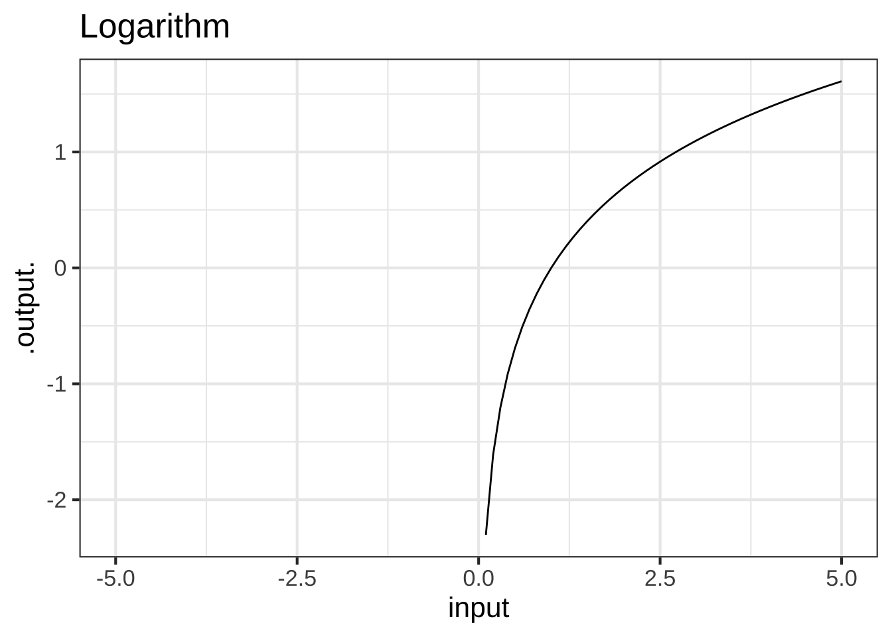
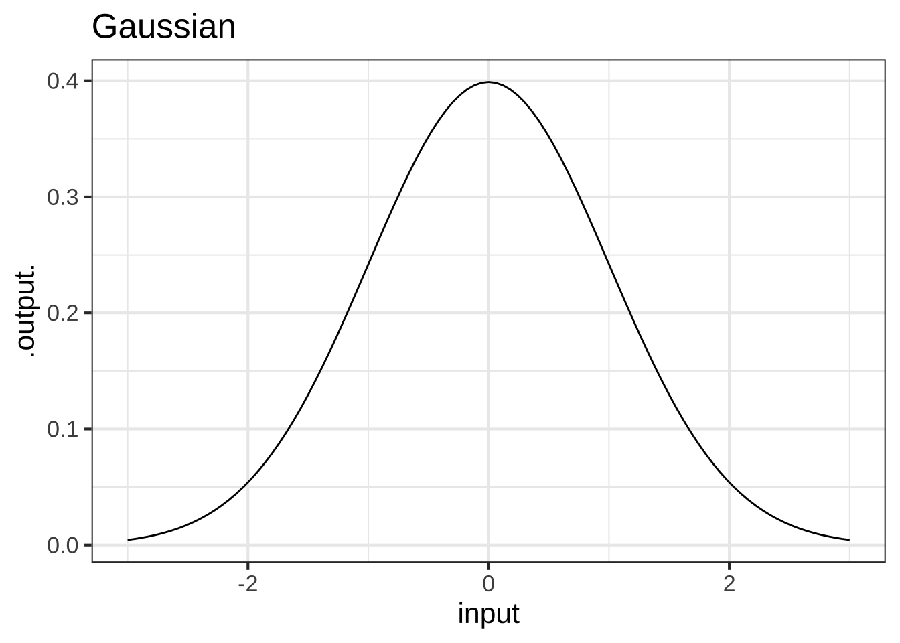
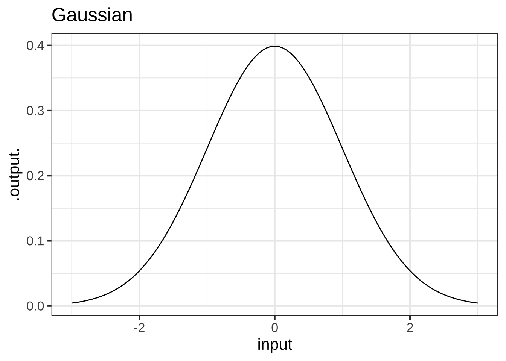
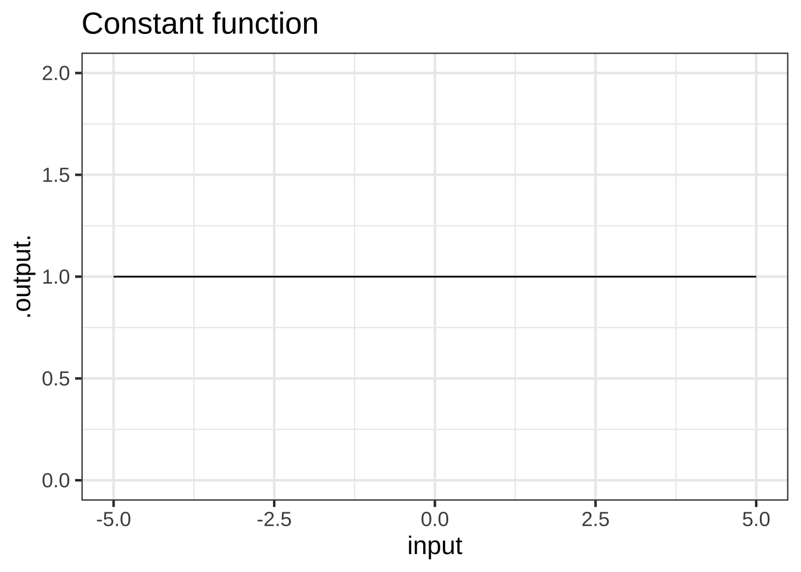
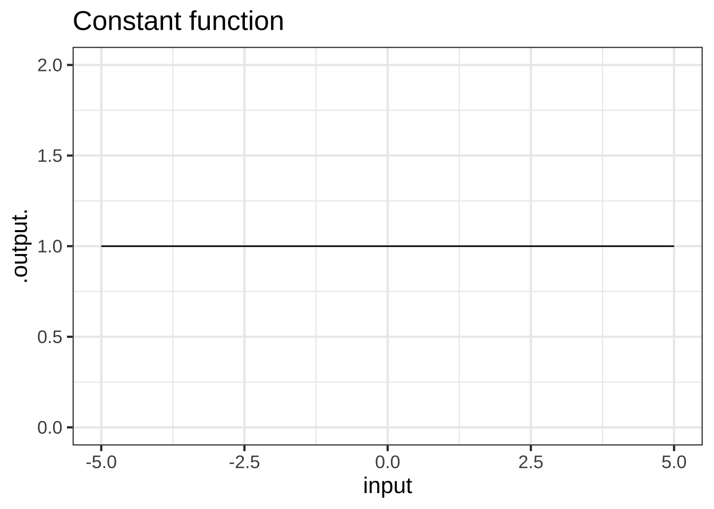

3 Naked modeling functions
Experience allows us to make a short list of mathematical functions that provide a large majority of the tools for representing the real world as a mathematical object. Think of this list as different actors, each of whom is skilled in portraying an archetypical character: hero, outlaw, lover, fool, comic. A play brings together different characters, costumes them, builds on dialog.
A mathematical modeler is a kind of playwright. She combines mathematical character types to tell a story about relationships. But there is only a handful of archetypical mathematical functions, the analog of the character actors in drama and comedy. We are calling these the naked modeling functions. In writing a mathematical model, you will clothe the actors to suit the era and location and assemble them together in harmony or discord.
3.1 The list
Here is a list of our basic, unadorned functions, the naked model function,
- Exponential \(e^x\)
- Logarithm \(\ln(x)\)
- Power-law \(x^p\)
- Sinusoid \(\sin(x)\)
- Straight-line \(m x + b\)
- Hump \(\text{dnorm}(x)\)
- Sigmoid \(\text{pnorm}(x)\)
We’ve written these here in a traditional notation so that you can see the connections to the math you’ve already studied. We’ve used \(x\) to stand for the single input to these functions just because that’s traditional.
It’s good to refer to the functions by their word name—exponential, logarithm, power-law, sinusoid, straight-line, etc. This helps to avoid the source of common confusion. For example, the mathematical expressions \(e^x\) and \(x^e\) are easily confused, but they are notation for utterly different patterns. You won’t so easily mistake “exponential” and “power-law.”
One important point to make here is that our list of naked modeling functions is very short. You should memorize the names and be able easily to associate each name with the traditional notation.
Over the next several chapters, we will introduce several features of functions. Some of our basic modeling functions have these features, some don’t. These features include:
- monotonicity up or down
- concavity up or down
- horizontal asymptotes
- vertical asymptotes
- periodicity
By the end of Block 1, you should be able to list all seven basic modeling functions and say which of these features are relevant to each.
You will also use and see the computer names for these functions. The names can differ somewhat from one computer language to another, but the names in the language we will use, R, are easily recognized by programmers who use any other language.
For ease of reference, here’s a table
| Name | Traditional notation | R expression |
|---|---|---|
| Exponential | \(e^x\) | exp(x) |
| Logarithm | \(\ln(x)\) | log(x) |
| Power law | \(x^p\) | x^p |
| Sinusoid | \(\sin(x)\) | sin(x) |
| Straight-line | \(m x + b\) | m*x+b |
| Hump | dnorm(x) |
|
| Sigmoid | pnorm(x) |
We’ve left out the traditional notation for the hump and sigmoid because there isn’t a standard one. Surprisingly, there is no specific name in R for the Power law or Straight-Line functions, but it’s easy to implement them when needed using the code above.
You noticed that the section heading is “The naked modeling functions.” We mean “naked” in a metaphorical sense, and chose the metaphor to make it easy to remember. Think of this list of seven functions as the celebrities of the world of calculus. Unlike human celebrities who appear and wane over the years, and marry and divorce each other frequently, these celebrities have been with us for generations and maintain intimate connections with one another that reflect the nature of mathematics rather than the fads and fancies of celebrities. (Mastering calculus is largely a matter of becoming familiar with the mathematical connections. You’ll see these in due time.)
These (basic) celebrity functions appear in many mathematical settings, just as a human celebrity strives to maintain a public image. The human celebrity is a human organism and that organism is naturally naked. In public appearance, however, the celebrity always is clothed in one way or another. (OK … Rarely some of them appear unclothed and the same is true in mathematics.) In other words, in order to interact with the world at large, the celebrities need attire.
Similarly, the mathematical functions that appear in real-world applications—as opposed to most math textbooks—always wear clothes, they are adorned with what we call parameters. Parameters help them deal with the units and dimension of quantities. And just as there are standard elements of clothing: shirt, skirt, trousers, … there are standard ways of clothing the naked modeling function. The process of decorating basic modeling functions is called the parameterization of the function, and there are often multiple ways of paremeterizing the same function.
Once we dress the naked functions—that is, parameterize them—they will become the superheroes of calculus. We’ll call this league of superheroes the basic modeling functions..
To be consistent, \(mx + b\) is not really naked. The naked equivalent is simply \(x\). Almost always, the way we will clothe functions is to replace the naked \(x\) with \(mx + b\)
3.2 Function shapes
You are going to be building models by selecting an appropriate function or by putting functions together in various ways. This might remind you of Lego blocks. As you know, these come in different shapes: \(6\times 2\), \(4\times 2\), \(2\times 2\), and so on. Similarly, each of the naked modeling function has a distinctively shaped graph. Knowing the shapes by name will help you when you need to build a model.
## Warning: Removed 6 row(s) containing missing values (geom_path).## Warning in log(x): NaNs produced## Warning: Removed 50 row(s) containing missing values (geom_path). 
 
 I didn’t include a graph of the straight-line function, since you already know what that looks like. Instead, I’ll plot two more basic functions, the identity function and the constant function. As you’ll see later, every straight-line function is a “linear combination” of these two.
I didn’t include a graph of the straight-line function, since you already know what that looks like. Instead, I’ll plot two more basic functions, the identity function and the constant function. As you’ll see later, every straight-line function is a “linear combination” of these two.
 

It’s tempting to deny that the constant function is a function. After all, the output does not depend on the input. Still, this situation arises frequently in modeling: you start out supposing that one quantity depends on another but it turns out that it does not. Since functions are our way of representing relationships, it’s helpful to have a function for the situation of “no relationship.” The constant function does the job.
3.3 The power-law family
The power-law “function” is really a set of differently shaped functions. We lump them together under the name “power-law” because they are strongly related, especially when it comes to the calculus operations you will be learning to use.
Even within the power-law family, it’s helpful to consider different but overlapping groups:
- The monomials: \(m_0(x) \equiv x^0\), \(m_1(x) \equiv x^1\), \(m_2(x) \equiv x^2\), \(\ldots\). Of course, \(m_0()\) is exactly the same as the constant function, and \(m_1(x)\) is the same as the identity function. As for the rest, they have just two general shapes: both arms up (for even powers); one arm up and the other down (for odd powers.)


 2. The negative powers, e.g. \(f(x) \equiv x^{-1}\), \(g(x) \equiv x^{-2}\), \(h(x) \equiv x^{-1.5}\)
2. The negative powers, e.g. \(f(x) \equiv x^{-1}\), \(g(x) \equiv x^{-2}\), \(h(x) \equiv x^{-1.5}\)


- The non-integer powers, e.g. \(f(x) = \sqrt{x}\), \(g(x) = x^\pi\), and so on.


Answer these questions about the naked-modeling functions. You can refer to the graphs in Figures ?? through ??.
Question A Which of these best describes the concavity of the hump function?
- It’s not concave. ☹︎ If it curves, it’s either concave up or down.
- It’s concave down. ☹︎ In some places, but not in others.
- It’s concave down in the center and concave up on both flanks. ✓
- It’s concave down on the left and concave up on the right ☹︎ Look again
Question B Which of these best describes the concavity of the sigmoid function?
It’s not concave. ☹︎ If it curves, it’s either concave up or down.
It’s concave down. ☹︎ In some places, but not in others.
It’s concave down on the left and concave up on the right. ☹︎ Look again
It’s concave up on the left and concave down on the right. ✓ Look again Question C Which of these best describes the concavity of the second-order monomial \(m_2(x) \equiv x^2\)?
It’s not concave. ☹︎ If it curves, it’s either concave up or down.
It’s concave down. ☹︎ Is it a smile or a frown?
It’s concave down on the left and concave up on the right. ☹︎ Look again
-
It’s concave up everywhere in its domain. ✓ Look again
We need questions about asymptotes.